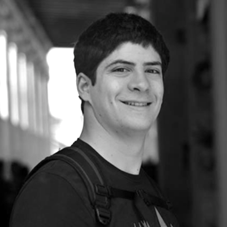

La Agencia

Carmen de la Rosa
Account Manager
Licenciada en Periodismo y con inglés nativo, Carmen se encarga de gestionar campañas que requieran el inglés como idioma principal. Comunicación online corporativa y gestión de campañas de marketing online.
En su tiempo libre: Fútbol, pádel, longboard vela, cine y literatura.
